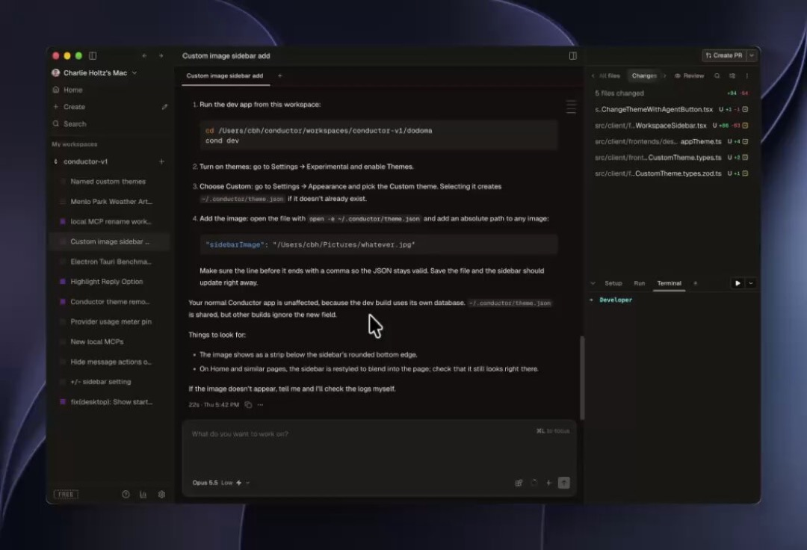
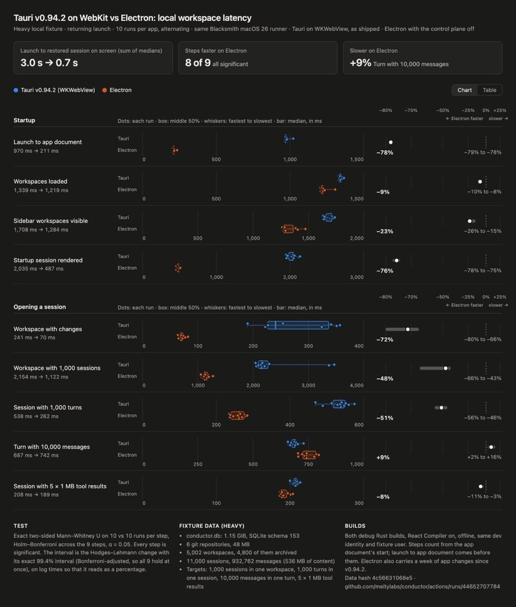

本期速览
01 Conductor启动渲染提速4.6倍
03 国产开源大模型算力受限迭代放缓
04 SpaceX向对手出租算力过半营收
05 Jane Street用Lean验证代码
08 DuckDB聚合查询87万行仅10毫秒
01｜Conductor启动渲染提速4.6倍
来源（X） · @dotey · 2026-11-25 09:53
引用内容
Charlie Holtz @charlieholtz
中文译文
Conductor 现在是一款 Electron 应用了！
我们用 Electron 重写了前端，保留了 Rust 本地服务器。我们已经讨论过这件事好几个月了，而现在我们只需要……用 prompt 就能实现它。
- 打开工作区快了 71%
- 启动到渲染快了 4.6 倍
- 内存占用减少 35%
- 唯一的缺点是下载体积变大了（500MB，之前约 200MB）
原文
Conductor is now an Electron app!
We rebuilt the frontend in Electron and kept the Rust local server. We've talked about doing it for months and now we can just... prompt it.
- Opening a workspace is 71% faster
- Startup to render is 4.6x faster
- 35% less RAM
- Only downside is a bigger download (500mb instead of ~200mb)


02｜Anthropic上线11门FDE实战课
来源（X） · @miles_mazy · 2026-11-25 16:14
整整 11 门课，教你怎么把客户的一个需求，做到能实际跑起来的试点
我做对里面一句话特别有共鸣：技术部署反而是容易的那部分
真正麻烦的地方，是判断客户这个需求到底值不值得做，做完之后怎么证明有效
最离谱的是，课里连开工前怎么记下原来的效率、试点结束怎么跟客户算清楚效果，都讲到了
还教了怎么在客户的代码仓库里用 Claude Code 做原型，把系统接上，再把做法交给对方团队
想做 AI 落地，转型FDE的朋友，都可以看看：
https://anthropic-partners.skilljar.com/path/claude-fde
03｜国产开源大模型算力受限迭代放缓
来源（X） · @marcus_s_deng · 2026-11-25 14:42
过去这几个月，DeepSeek、GLM、Kimi、Qwen 在 2T–3T 级超大模型上的节奏明显慢下来了：
Kimi 7 月开源了 2.8T 的 K3，到 10 月底才在同一个 2.8T 底座上靠加大后训练发了 K3.1 Pro；
阿里 8 月开源了 2.4T 的 Qwen 3.8-Max，到了 11 月刚发的 Qwen 4-Max（2.4T）干脆转了闭源，只留 API；
智谱刚发的 GLM-5.4 没急着硬拉参数，而是拿 750B 底座改了 Loop Transformer 循环跑两遍，传闻里的 3T 级 GLM-5.5 还在路上；
DeepSeek 在 8 月的 1.6T V4 Pro 之后，9 月先放了 552B 新架构的 V4.1 Flash，旗舰 V4.1 Pro 拖到现在还没见影子。
最近外网又开始反复炒作“因为美国大厂防蒸馏起效了，所以中国模型跟不上了”。这种说法挺可笑的。看看各家最近掏出来的东西：Kimi 的 KDA、GLM-5.4 的 750B Loop 架构、DeepSeek V4.1 的非对称 CED 架构，全是冲着省显存、提深度去的底层改动，这跟蒸馏有什么关系？
真正的卡点非常直白，就是算力规模不够，没法同时兼顾训练时间、训练深度和试错成本。
1. 训一个 3T 级 MoE，到底要吃掉多少算力？
拿当前主流的 3T 级稀疏 MoE 粗算一下（参考 Kimi K3.1 Pro 的 2.8T 总参 / 104B 激活，或 Qwen 的 2.4T / 71B–95B 激活）：
假设激活参数在 80B–100B，预训练数据做到 30T–50T tokens（2026 年前沿底座的常规水位），光预训练就需要约 1.5 * 10^(25) 到 3 * 10^(25) FLOPs。
这还没完。今年模型真正拉开差距的，是 1M 长上下文中训练加上大规模多领域联合强化学习（RL），这部分吃掉的算力往往还要再翻一倍，整套跑下来容易摸到 4 * 10^(25) 到 8 * 10^(25) FLOPs。
换算成卡时：按 H800/H100 跑大 MoE 实际有效算力 500–650 TFLOPS 算，跑完一轮完整训练大约需要 1,800 万到 3,500 万卡时。
放在一个 1 万张卡的集群上，不算中途硬件掉卡和重跑，单次完整迭代就要耗掉 2.5 到 4 个月。更致命的是，大厂做研究不是一次就成的，架构消融、数据配比、RL 配方都要并行开几条线试错，卡一紧张，就只能缩规模、减试错，或者像 GLM 那样先在小尺寸上卷架构。
2. 国内外算力已经不是一个量级，而且海外云租卡的路刚被堵死
再看大洋彼岸的算力水位。按 SemiAnalysis 最近公开的估算，OpenAI 和 Anthropic 两家就已经锁死了全球 2027 年新增算力的 25%–40%。
Anthropic 今年底可用算力目标是 4–5 GW（其中大约只有 1 GW 拿去给 Claude Code 跑推理，剩下的大头全砸在训练和研究上），1 GW 大概对应几十万张顶级 GPU/TPU/Trainium；
OpenAI 这边，微软、Oracle、AWS 加上 Stargate 首批落地项目，2026 下半年也在往多 GW 级拉，几十万张 GB200/GB300 并行跑。
国内这几家呢？公开发布过的集群规模普遍还停留在数千到数万张存量 H800/H100（阿里作为云大厂总盘子大一些，但也要切分给云客户、搜索推荐和多条业务线；独立实验室能独占用来训单一旗舰的存量高阶英伟达卡，和美国头部的差距差不多在 一个数量级）。
更雪上加霜的是 11 月 16 日美国商务部（BIS）刚落地的远程算力新规（11 月 19 日生效）：以前国内团队还能绕道新加坡、马来西亚等海外数据中心租英伟达卡训模型，新规直接把海外机房向中国企业提供远程算力的许可红线划在了 1,200 万 Aggregate TPP——折合下来只有 758 张 H100，或者 334 张 B200，超过就必须向美方申领许可证（存量租约最多给 90 天缓冲到明年 2 月）。这条出海租卡的路，基本被焊死了。
3. 推算一下 DeepSeek 的现状和 V4.1 Pro
按 DeepSeek 的技术报告，V4 和 V4 Pro（1.6T 总参 / 49B 激活）的预训练还是在存量英伟达 H800/H100 集群上跑的。外界普遍估算他们手里能调动的英伟达高端存量卡大概在几万张级别，但别忘了 DeepSeek 还要扛住全球榜首级别的免费端和 API 并发。
所以看他们今年 9 月发的 V4.1 Flash（552B 总参，输入 8B / 输出 16B 激活），就能看懂思路：这套 CED 非对称架构把 KV Cache 的 HBM 显存占用直接压到了原来的 1/4。按 V4 Flash（284B）到 V4 Pro（1.6T）的放大比例，再加上 V4.1 Flash 自身已经扩到 552B，V4.1 Pro 大概率会落在 2.0T–3.0T 总参、输入 20B–30B / 输出 40B–60B 激活，原生带视觉和 1M 上下文。
结合时间线反推：9 月底 V4.1 Pro 就传过内部灰度，11 月 16 日现役 V4 Pro 后端切集群提速 40%，紧接着网页免费端开始严格限额，再加上刚刚落地的千亿级融资。这大概率意味着 V4.1 Pro 的底座预训练在英伟达存量卡上早就收尾了，现在卡在两件事上——大规模 RL 后训练还在对齐 Opus 5.5 / Gemini 4 Neon，以及上线前把推理流量腾挪到新集群上。按这个节奏，今年 12 月下旬发预览版或先上 API 的概率挺高，全量稳定版和开源权重顺延到明年 1 月也正常。效果上，靠 CED 架构和深度 RL，大概率能回到开源第一梯队，在代码和数学上咬住 Opus 5.5 和 GPT-6.2，但很难再现当年 R1 那种单点碾压的震撼感了。
4. 全面迁到昇腾 950 训练：真正的硬仗在这里
产业链 11 月初传出 DeepSeek 下一代 V5 计划直接切到华为昇腾 950 上做核心训练，目标指向 2027 年；刚落地的千亿融资里，宁德时代也配套押注了乌兰察布 1GW 园区（规划 16 万颗以上昇腾 950DT）。
单看纸面参数，华为这次给昇腾 950DT 的硬件思路很清楚：
单卡 1 PFLOPS FP8（HiF8），大约是英伟达 H100 的一半、B200 的两成多；配了自研 144GB HBM（4 TB/s 带宽）和 2 TB/s 灵衢互联，还补上了 SIMT 编程模型；
单卡算力不够，靠 Atlas 950 SuperPoD（8,192 卡超节点） 硬堆规模和互联带宽。一个 16 万卡的 950DT 园区，理论 FP8 峰值大约能折合 8 万张 H100（或约 3.5 万张 B200）。
但从“买到卡”到“训出世界顶级旗舰”，中间还有三座大山要翻：
产能和 HBM 爬坡： 昇腾 950DT 今年 Q4 才刚开始放量，渠道价已经被国产 HBM 产能推高了不少，凑齐几万到十几万张卡且完成机房部署需要几个季度。
软件栈和数值稳定性： 从 CUDA 切到 CANN，不是跑通推理就行。虽然 DeepSeek 和华为 10 月刚联合开源了 950 的底层算子和通信库，但在几万张国产卡上跑 3T MoE 预训练，All-to-All 通信优化、HiF8 低精度训练防 loss 飙升、跨机柜光互联的掉卡容错，全都是要在实战里烧时间和算力一点点踩坑的。
有效训练效率（MFU）折损： 新硬件第一代大规模训练，集群稳定性和利用率大概率打折扣，同样训一个 3T 级模型，前期耗时肯定比成熟英伟达集群长。
什么时候能追上？
短期看，2026 年底到 2027 年上半年大概就是国产开源模型最难熬的阵痛期：老的英伟达存量卡不够用、海外云租卡刚被 BIS 封死、国产昇腾 950 集群还在爬坡和磨合训练栈。这段时间里，闭源旗舰在绝对上限和迭代频率上，大概率会拉开一段看得见的身位。
真正的转折点估计要等到 2027 年下半年到 2028 年初——前提是昇腾 950DT（以及后续的 960）能稳定交付出十万卡级训练集群，并且 DeepSeek V5 这批第一代“全国产算力全链路训练”的旗舰能顺利跑通落地。一旦算力供给从“靠存量卡精打细算”变成“国产超节点可持续扩产”，开源模型的迭代速度才有可能重新咬死闭源。
也许度过这个至暗时刻，就将迎来光明，那些将AI当成宗教主义，给AI赋予反人类的种族歧视价值观，不正是2077的末世预言吗？而开源的智能普惠，才是未来的希望，不是吗？
04｜SpaceX向对手出租算力过半营收
来源（X） · @Cloud2005n · 2026-11-24 13:16
《纽约时报》刚刚曝光，马斯克在 SpaceX 内部向员工摊牌：自家 AI 模型开发已经落后于竞争对手，拿芯片训练 Grok 根本赚不到钱，不如直接把算力租给对手划算。他甚至要求工程师每周论证一次用卡理由，11 月刚解散了 60 人的 Grok Imagine 团队、9 月关停了 AI 伴侣项目，最绝的是还把一个内部工作群直接改名叫“Sell compute because we can't compete（因为打不过，所以卖算力）”。
更魔幻的是商业账本：现在 SpaceX 旗下 AI 部门（SpaceXSI）已经贡献了公司一半以上的总营收，靠的根本不是 Grok，而是给死对头当“算力包租公”——Anthropic 每月付给它约 31 亿美元，谷歌每月付约 8 亿美元。消息曝光后，马斯克本人还在 X 上淡定回复：“《纽约时报》居然把显而易见的事当新闻发。”
唯一让人捏把汗的条款藏在合同末尾：这笔每月近 39 亿美元的天价算力租约，双方只要提前 90 天通知就能随时解约。从死磕大模型转行给死对头当机房房东，你觉得马斯克是极致务实的商业天才，还是变相承认 Grok 已经出局了？
05｜Jane Street用Lean验证代码
来源（X） · @alacheng · 2026-11-25 19:25
交易系统对正确性要求极高，一个 bug 可能造成数百万美元损失，且往往隐藏在复杂路径（边缘情况、并发、精度、状态不一致）中。”形式化证明用数学证明“在给定输入条件下，输出一定满足特定属性”，相当于证明所有路径都正确。
Jane Street 是全球最大量化交易公司之一，也是 OCaml 工业界最大用户（代码超过 3000 万行）。技术负责人 Yaron Minsky 过去 25 年一直对形式化方法持怀疑态度：类型系统 + 严格测试 + 属性测试已够用，形式化成本太高（以 seL4 微内核为例：验证 8700 行 C 代码花了 25 人年，约每行代码需 23 行证明 + 半天人工）。
06｜K8s-Workshop开源28章实战课
来源（X） · @Ryrenz · 2026-11-25 20:09
28 个章节配交互幻灯片、独立实验和自测题库，同一个应用从 Pod 一路演进到 Gateway API。0BSD 许可，不用署名，也不用注册账号。
照着三天版走一遍，K8s 的主线就通了。
07｜AppBench移动端UI视觉工作台
来源（X） · @DZhao63405 · 2026-11-24 22:37
用 AI 写 App，功能秒出，但界面永远一股「AI 味」…… 干脆自己撸了个本地移动端 UI 视觉工作台 AppBench：
✨ 内置 20 套高定移动端风格（极简、杂志、新消费、游戏化都有）
✨ 36 个实时可交互微动效，看中一键复制 Prompt 给 AI ✨ 原生接入 MCP，支持在页面上「指哪改哪」+ 手机扫码真机预览
告别反复抽卡，让 AI 第一次就写出旗舰质感。目前在收尾阶段，大家可以蹲一蹲
08｜DuckDB聚合查询87万行仅10毫秒
来源（X） · @Suercha007 · 2026-11-25 17:09
数据有 87 万行，场景都是聚合、分组和关联查询，基本上都是 10 毫秒以内出结果！！
顺便测了下 pandas 需要 10 秒左右，差距太大了！可以被称为数据分析领域的 sqlite!